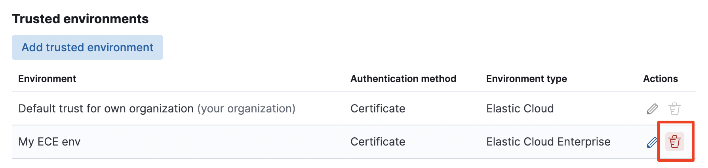
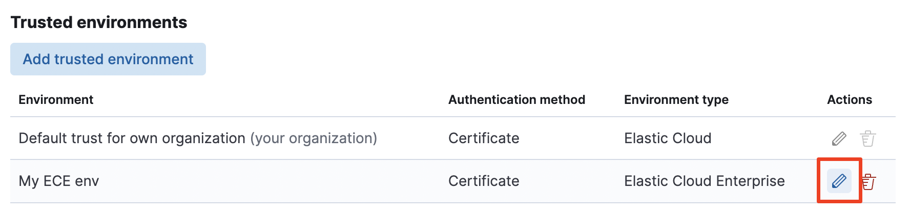

Edit or remove a trusted environment
editFrom a deployment’s Security page, you can manage trusted environments that were created previously. This can happen when:
- You no longer need a trusted environment and want to remove it.
- You want to refresh the certificate, or add or remove trusted deployments of an existing trusted environment relying on certificates as a security model.
- You want to remove or update the access level granted by a cross-cluster API key.
Remove a trusted environment
editBy removing a trusted environment, this deployment will no longer be able to establish remote connections using certificate trust to clusters of that environment. The remote environment will also no longer be able to connect to this deployment using certificate trust.
With this method, you can only remove trusted environments relying exclusively on certificates. To remove remote connections that use API keys for authentication, refer to Update the access level of a remote cluster connection relying on a cross-cluster API key.
- Go to the deployment’s Security page.
- In the list of trusted environments, locate the one you want to remove.
-
Remove it using the corresponding
deleteicon. - In Kibana, go to Stack Management > Remote Clusters.
- In the list of existing remote clusters, delete the ones corresponding to the trusted environment you removed earlier.
Update a certificate-based trusted environment
edit- Go to the deployment’s Security page.
- In the list of trusted environments, locate the one you want to edit.
-
Open its details by selecting the
Editicon. -
Edit the trust configuration for that environment:
- From the Trust level tab, you can add or remove trusted deployments.
- From the Environment settings tab, you can manage the certificates and the label of the environment.
- Save your changes.
Change a cross-cluster API key used for a remote connection
editThis section describes the steps to change the API key used for an existing remote connection. For example, if the previous key expired and you need to rotate it with a new one.
If you need to update the permissions granted by a cross-cluster API key for a remote connection, you only need to update the privileges granted by the API key directly in Kibana.
- On the deployment you will use as remote, use the Elasticsearch API or Kibana to create a cross-cluster API key with the appropriate permissions. Configure it with access to the indices you want to use for cross-cluster search or cross-cluster replication.
-
Copy the encoded key (
encodedin the response) to a safe location. You will need it in the next steps. - Go to the Security page of the local deployment and locate the Remote connections section.
- Locate the API key currently used for connecting to the remote cluster, copy its current alias, and delete it.
-
Add the new API key by selecting Add an API key.
-
For the Setting name, enter the same alias that was used for the previous key.
If you use a different alias, you also need to re-create the remote cluster in Kibana with a Name that matches the new alias.
-
For the Secret, paste the encoded cross-cluster API key.
- Click Add to save the API key to the keystore.
-
-
Restart the local deployment to reload the keystore with its new setting. To do that, go to the deployment’s main page (named after your deployment’s name), locate the Actions menu, and select Restart Elasticsearch.
If the local deployment runs on version 8.13 or greater, you no longer need to perform this step because the keystore is reloaded automatically with the new API keys.